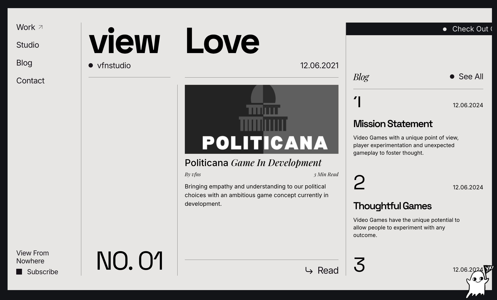
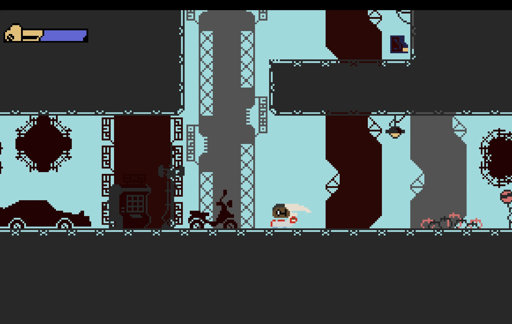

View
From NowhereTiny, thoughtful indie games — every interface part of the journey.
- UI/UX Design
- Game Design
- Playtesting
- Pixel Art
- Brand Strategy
- Web Design
- Asset Creation
Joined a narrative-focused indie game studio as UI/UX Designer — expanded fast into game design, playtesting, asset creation, and studio brand. Every interface was designed as part of the player journey: menus and HUDs that feel like they belong in the world.
Contributed to core game design including narrative pacing, progression systems, and unlock mechanics. Led structured playtesting sessions for every build — feedback synthesis translated into real design improvements.
Pixel art assets, texture sourcing, and the full studio website and brand identity. The small team environment meant wearing multiple hats and learning rapidly across disciplines.



